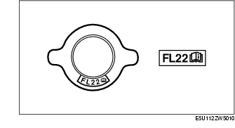

ENGINE COOLANT PROTECTION INSPECTION [ZY]
id0112008004a5
1. Measure the engine coolant temperature and specific gravity using a thermometer and a hydrometer.
-
Caution
-
• Use engine coolant at a concentration that meets the environmental conditions in which the vehicle is driven, otherwise engine damage could occur.
-
• The engine has aluminum parts and must be protected by an ethylene-glycol-based coolant to prevent corrosion and freezing.
-
• Do not use coolants containing Alcohol, Methanol, Borate or Silicate. These coolants could damage the cooling system.
-
• Use only soft (demineralized) water in the coolant mixture. Water that contains minerals will cut down on the coolant's effectiveness.
-
• Engine coolant damages paint. If engine coolant does get on a painted surface, rinse it off quickly.
-
Note
-
• If the "FL22" mark is shown on or near the cooling system cap, use FL22 type engine coolant.
-
• FL22 type engine coolant is shipped as a diluted solution (55% coolant, 45% water). Use the solution as is when replacing coolant.

2. Determine the engine coolant protection level by referring to the graph shown.
-
• If the engine coolant protection level is not correct, add water or engine coolant.